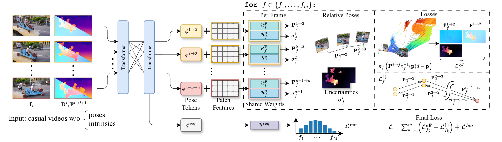
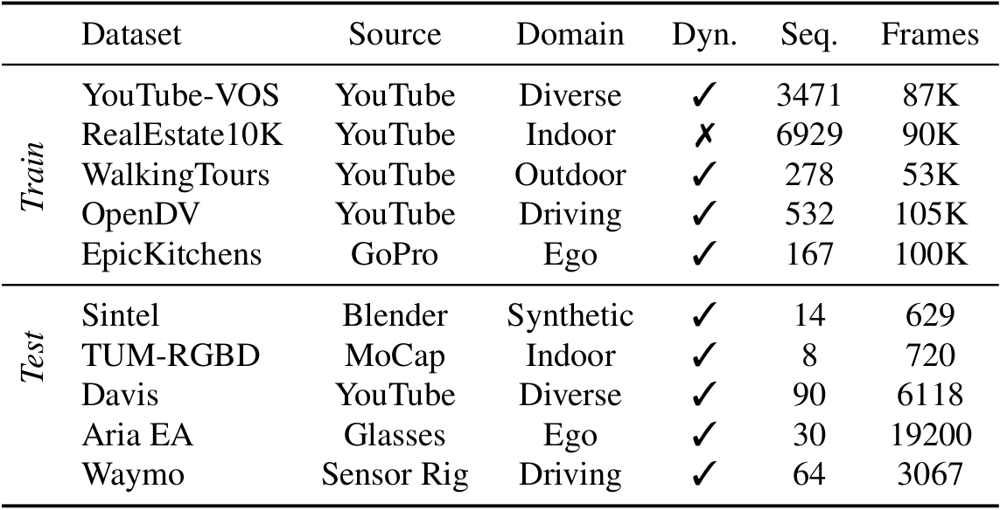

Traditional Structure-from-Motion (SfM) and SLAM methods struggle with arbitrary and dynamic video data, often requiring known camera intrinsics or expensive test-time optimization. Recent data-driven approaches like Dust3r show promise but lack robustness to dynamic objects and rely on labeled data. AnyCam is a fast transformer-based model that estimates camera motion and intrinsics in a feed-forward manner, leveraging priors from real-world camera movements. It trains on diverse, unlabeled YouTube videos using an uncertainty-based loss and pre-trained depth/flow networks instead of direct motion supervision. A lightweight trajectory refinement step prevents drift. AnyCam achieves accurate and fast performance on benchmarks and can generate high-quality 4D point clouds efficiently.

AnyCam processes a sequence of frames from a casual video with corresponding depth maps and optical flow. A backbone extracts feature maps per image. Information sharing between frames is enabled by multiple attention layers that process the features of all sequence images. The transformer architecture outputs one pose token φi → j per timestep and an additional sequence token φseq. The pose tokens are processed using multiple intrinsic hypotheses f ∈ {f1, …, fm}, parametrized by frame prediction heads (ℋPf, ℋσf). The sequence head ℋseq predicts the likelihood scores of the different hypotheses. The model is trained end-to-end via a reprojection loss, a pose consistency loss between forward and backward pose predictions, and a KL-divergence loss. At inference time, we apply a test-time refinement based on bundle adjustment.

Our training formulation requires no labeled data and is robust towards dynamic objects and suboptimal image quality. This is a key benefit of our method, as dynamic videos with 3D labels are scarce. To highlight this strength, we rely on a diverse mix of datasets based on YouTube or individual GoPro capture, as shown in the table. None of the datasets has ground truth 3D labels (note for some, Colmap was later applied to obtain proxy labels, but we do not use them). Following existing works on pose estimation in dynamic environments, we perform evaluation on the Sintel and the dynamic subset of TUM-RGBD. Furthermore, we test AnyCam qualitatively on three other datasets: Davis (diverse videos from YouTube), Waymo (autonomous driving), and Aria Everyday Activities.
@inproceedings{wimbauer2025anycam,
title={AnyCam: Learning to Recover Camera Poses and Intrinsics from Casual Videos},
author={Wimbauer, Felix and Chen, Weirong and Muhle, Dominik and Rupprecht, Christian and Cremers, Daniel},
booktitle = {Proceedings of the IEEE/CVF Conference on Computer Vision and Pattern Recognition},
year={2025}
}